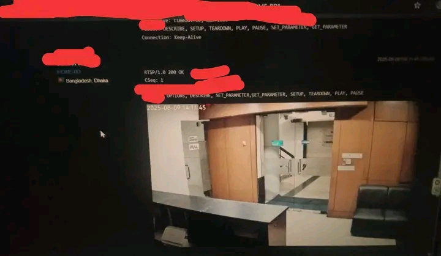

The Chilling Reality of Webcam Vulnerabilities In our increasingly connected world, the convenience of remote monitoring through CCTV, webcams, and IP cameras has become a staple in homes and offices. But beneath this veneer of convenience lies a dangerously exposed reality, one that most people fail to grasp. The truth is, these internet-connected devices can turn into invisible eyes, not just on you, but on everyone around you, often without your knowledge or consent. The Myth of Digital Privacy: Your Camera, Their View
Even if you're not an IP or webcam owner, you're not entirely safe. A hacker targeting a nearby camera can still potentially surveil your activities. This is due to a critical flaw in many of these devices: they allow live video feeds accessible from anywhere in the world, often with remote pan, tilt, and zoom capabilities. What might sound like a plot from a Hollywood thriller is, in fact, a terrifying reality. I've personally encountered countless publicly accessible webcams online that could be easily accessed. The ease of access is truly alarming. Believe me, I was able to gain live access to an office webcam situated nearly 370 kilometers away from my location. The implications of this are profound, highlighting a gaping hole in our digital defenses. The Hacker's Playground: From Offices to National Security. Hackers, from any corner of the Earth, can effortlessly search and identify the number of webcams installed at a specific company, in a particular city, or even within an entire country. Often, they don't even need complex exploits to gain access. For instance, I was able to find over 300 cameras at Seoul National University in South Korea, and gaining live access to them was surprisingly straightforward. This danger transcends personal risk; it poses a grave threat to national security. Consider the reports of Israel's intelligence agency, Mossad, allegedly monitoring targets by hacking into webcams in various Iranian cities during their planning for potential strikes. This is not mere speculation; it's an operational reality. I am truly astonished by the ease with which video feeds from thousands of web and IP cameras, even in seemingly secure and developed countries, can be accessed. These feeds often provide not just live video but also the camera's precise location on Google Maps or a satellite map. While these claims might seem hard to believe, I share this information solely to warn and educate. The Ultimate Shield: Your Awareness.
The most crucial form of security is awareness. Your personal security hinges on your consciousness and vigilance, and by extension, the security of your nation is fortified. Therefore, before you install and use any webcam or IP camera, you must thoroughly verify the strength and integrity of its security features. Remember this: Hacking is a kind of superpower. If you master it, you will possess the ability to do countless things that the average person cannot even imagine. However, the responsibility to use this superpower correctly lies entirely with you. Misusing it for malicious purposes will inevitably put you in danger. Stay aware. Stay safe.
Comments